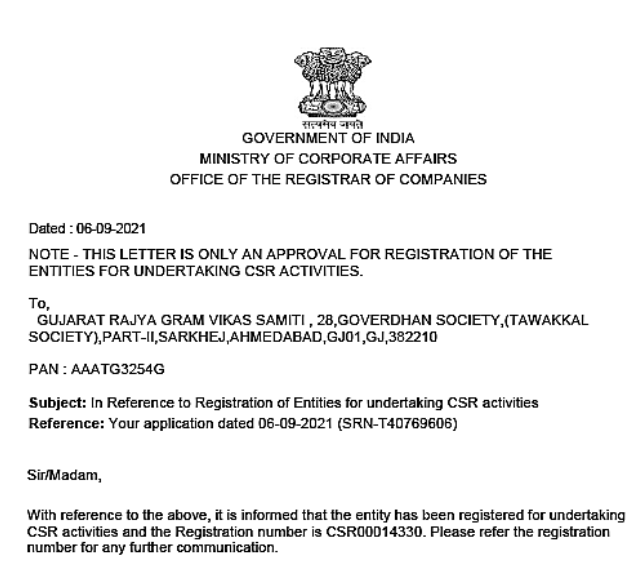
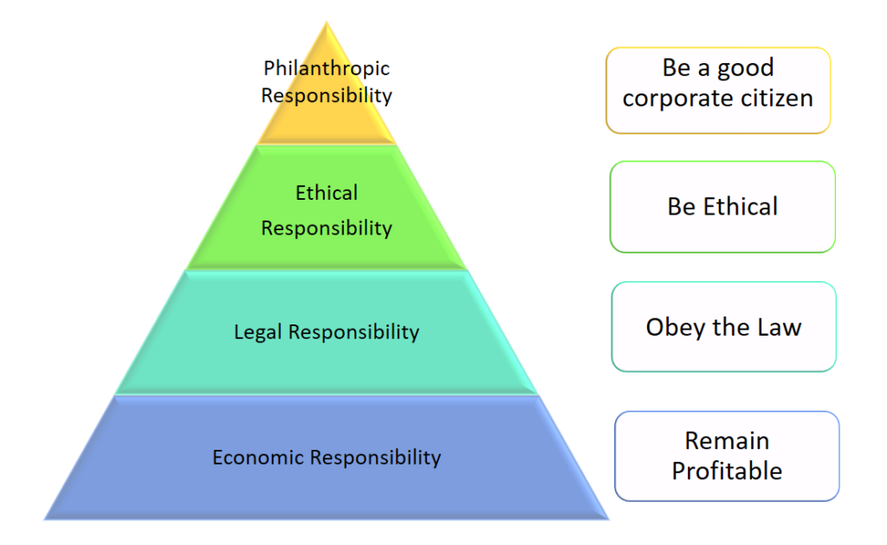

Corporate Social Responsibility
CSR & Gujarat Rajya Gram Vikas Samiti : CSR00014330
Gujarat Rajya Gram Vikas Samiti has been registered under Central Government for undertaking CSR activities. CSR Registration Number: CSR00014330
We have carried out more than 52 Projects at the Grass Root level amounting to more than 600 Lakhs. We have associated with companies, District Administrations, Panchayats, Government of Gujarat, and the integrated child development scheme.
More than 1 Lakh people have been benefitted with various CSR Projects. We have provided direct and indirect employment to approximate 5000 youth through our projects. Our infrastructure is one of the best in the state of Gujarat and appreciated by all the stake holders.

We understand that companies need reliable and effective partners for CSR projects, and at GRGVS, we are dedicated to providing the expertise and support needed to make a real impact in communities. Contact us today to learn more about how we can help you achieve your CSR goals.
Initiatives and milestones for plantation drives.
Initiatives and milestones for Anganwadi and ICDS.
Initiatives and milestones for rural development.
Initiatives and milestones for women empowerment.
Initiatives and milestones for sanitation.
Initiatives and milestones for water projects.
Initiatives and milestones for education support.
Initiatives and milestones for solar energy.
Initiatives and milestones for Nari Gruh.
Initiatives and milestones for disabled and elderly support.
Initiatives and milestones for disaster relief.
Initiatives and milestones for Urban Forest projects.
Definition of CSR: legal (India) : According to section 2(1) (c) to the Companies (Corporate Social Responsibility Policy) Rules, 2014 & companies act 2013.
“Corporate Social Responsibility (CSR)” means and includes but not limited to:-(i) Projects or programmes relating to activities specified in Schedule VII to the Act; or(ii) Projects or programmes relating to activities undertaken by the Board of Directors of a company (Board) in pursuance of recommendations of the CSR Committee. And as per declared CSR Policy of the company subject to the condition that such policy will cover subjects enumerated in Schedule VII of the Act.
According to Professor Archie B Carroll, “Corporate social responsibility involves the conduct of a business so that it is economically profitable, law abiding, ethical and socially supportive. To be socially responsible then means that profitability and obedience to the law are foremost conditions when discussing the firms’ ethics and the extent to which it supports the society in which it exists with contributions of money, time and talent."
